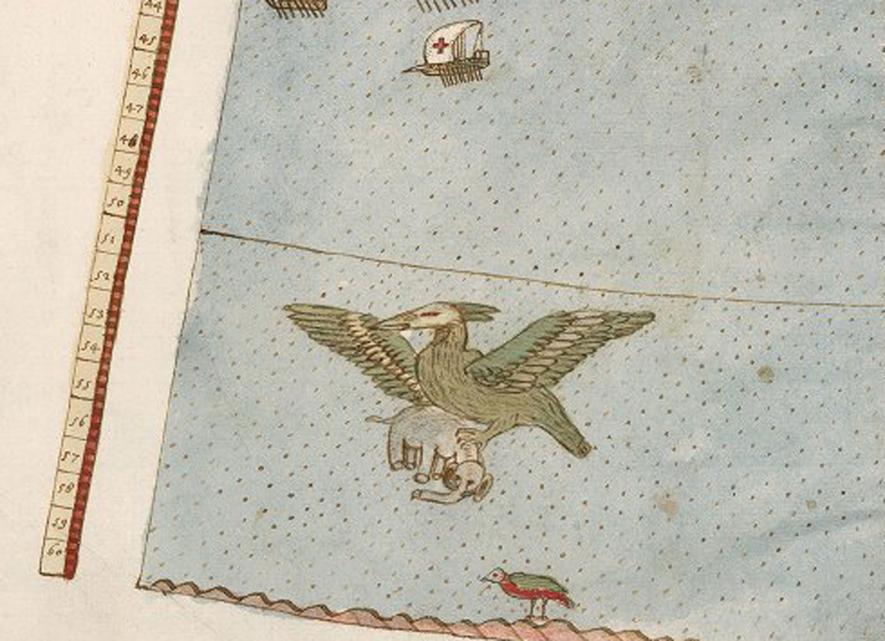
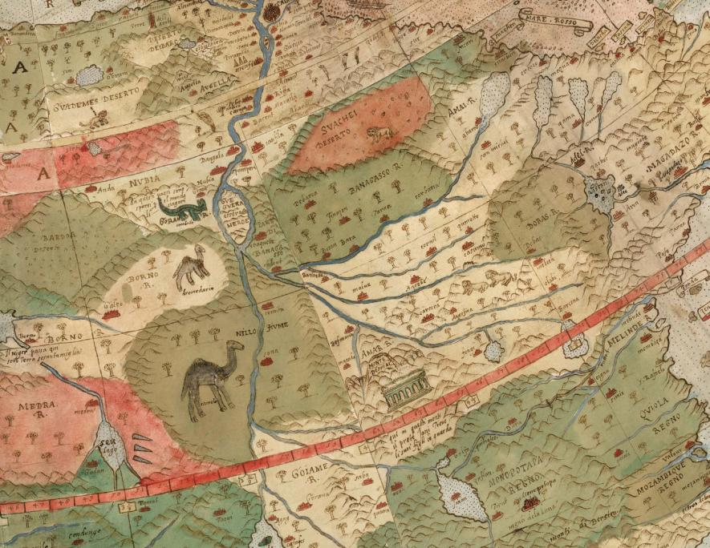

Mapa je plná fantastických tvorov, od jednorožcov na Sibíri až po mermeny, ktoré sa pohybujú v južnom oceáne, a strašidelný vták, ktorý lietal so slonom. Mapa odzrkadľuje geografické poznatky (a mylné predstavy) svojej doby, ale v niektorých ohľadoch je to prekvapivo pokročilé.
Vykresľuje Zem, ako by ju bolo vidieť pri pohľade priamo na severný pól z vesmíru, čo nie je bežne používaná mapovými tvorcami do 20. storočia.
 